Authors: S. Maji, M. P. Nowak
Type: theory · Category: other · PDF: https://arxiv.org/pdf/2605.18411v1
Analysis basis: full PDF text, analyzed in chunks
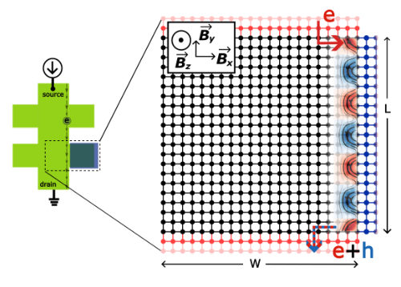
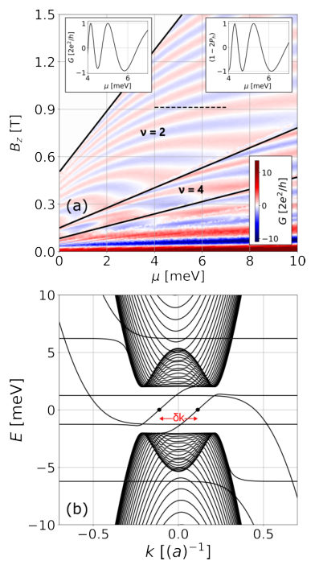
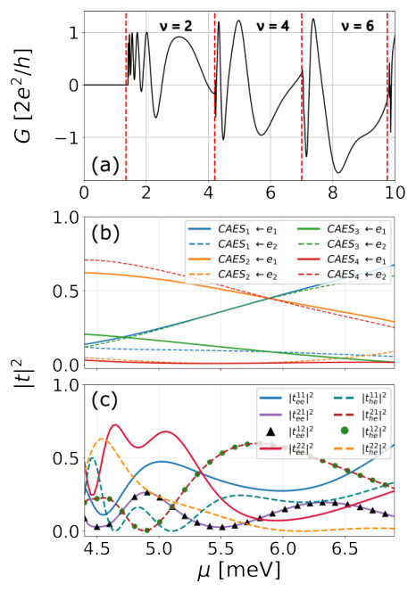
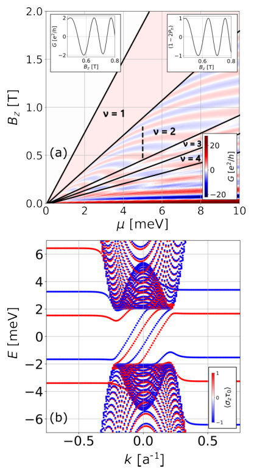
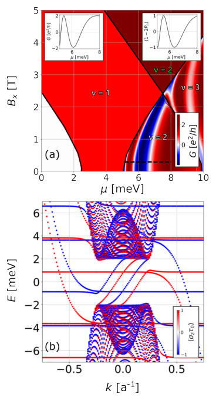
Summary. This paper explores how superconductivity and spin-orbit coupling interact to modify the edge states of a quantum Hall system. It reveals that Andreev reflection allows for the mixing of previously independent edge modes and that spin-orbit coupling can fundamentally alter transport through complex spin-mixing effects. These findings provide insight into the complex interplay of topology, superconductivity, and spin in 2D heterostructures.
Why it may be interesting. not directly relevant
Main problem. The study investigates the formation, transport properties, and spin/orbital mixing of Chiral Andreev Edge States (CAES) in a quantum Hall system proximitized by a superconductor.
Main result. The authors demonstrate that Andreev reflection induces orbital mode mixing at higher filling factors and that the combination of Rashba spin-orbit interaction and in-plane magnetic fields drives complex spin mixing and conductance oscillations.
Method. Numerical modeling using the Bogoliubov-de Gennes equations implemented via the Kwant package and the Landauer-Büttiker approach for transport calculations.
Model / system. A two-dimensional electron gas (2DEG) in a multi-terminal Hall-bar geometry with a superconducting contact, modeled using a tight-binding Bogoli-de Gennes Hamiltonian including Zeeman and Rashba spin-orbit interactions.
Key observables. Non-local conductance, electron-to-electron and electron-to-hole transmission probabilities, and spin-polarization of bands.
Important parameters / regimes. Filling factors (v=1, 2, 4), perpendicular and in-plane magnetic fields, Rashba spin-orbit coupling strength, and chemical potential.
Assumptions / limitations. The analysis of transmission degeneracies assumes the system is at the zero-bias limit to utilize particle-hole symmetry.
Figures summary. Figure 1 shows the Hall bar schematic; Figure 2 displays conductance maps and dispersion relations; Figure 5 and 6 show conductance maps under in-plane fields and SOI; Figure 7 and 9 illustrate transmission probabilities and degeneracies.
Paper structure. The paper introduces the physical system and model, analyzes orbital mixing in the multi-mode regime, investigates the effects of Zeeman splitting and spin-orbit interaction on spin dynamics, and concludes with a symmetry analysis of transmission probabilities.
We investigate the formation and transport properties of chiral Andreev edge states in a two-dimensional quantum Hall system proximitized by a superconductor. By numerically modeling the system using the Bogoliubov-de Gennes equations, we analyze the non-local conductance and transmission probabilities of multimode and spinful systems. We demonstrate that the Andreev reflection process induces a mixing of the quantum Hall edge modes at higher filling factors, a phenomenon strictly prohibited in clean, purely electronic systems. When incorporating the Zeeman interaction, we show that the Andreev edge states split into uncoupled spin species, maintaining spin orthogonality that prevents mixing between opposite spin sectors. Furthermore, we explore the impact of Rashba spin-orbit coupling. While the spin-orbit interaction alone causes slight spin depolarization, its combination with an in-plane magnetic field drives complex spin mixing among all chiral Andreev bands, fundamentally altering the conductance oscillations. Finally, we reveal that the electron transmission probabilities exhibit robust degeneracies, which emerge as a direct consequence of the unitarity constraints and the particle-hole symmetry of the system's scattering matrix in a magnetic field and the presence of spin-orbit interaction.
Authors: P. V. Sreenivasa Reddy, Guang-Yu Guo
Type: theory · Category: other · PDF: https://arxiv.org/pdf/2605.18098v1
Analysis basis: full PDF text, analyzed in chunks
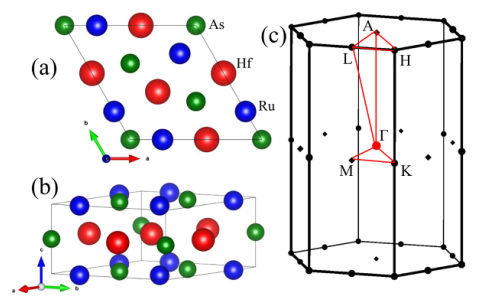
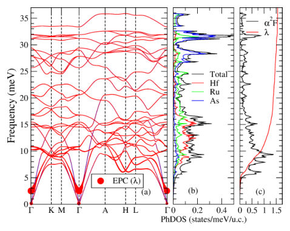
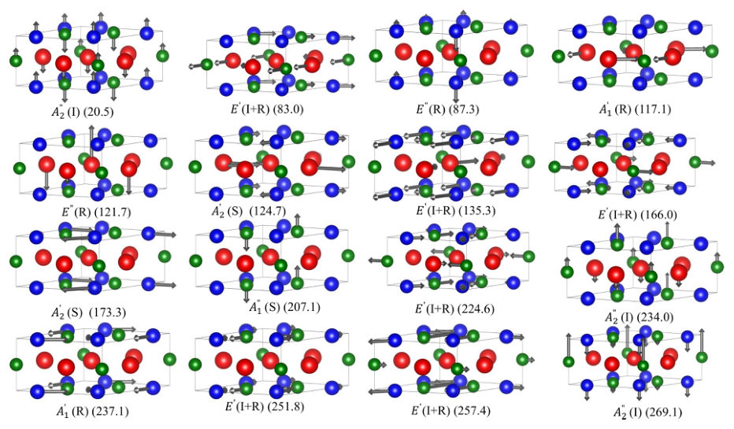
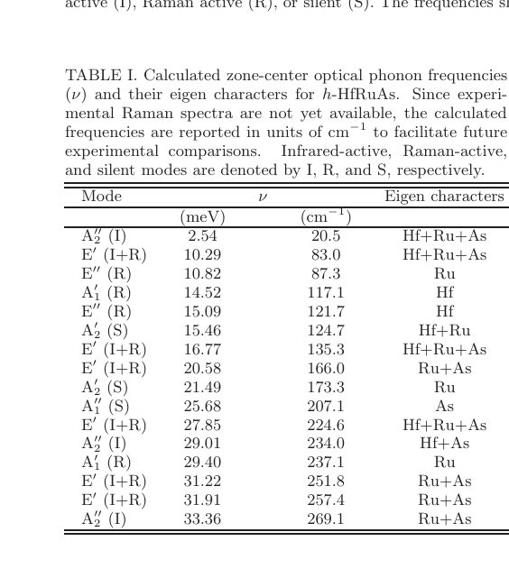
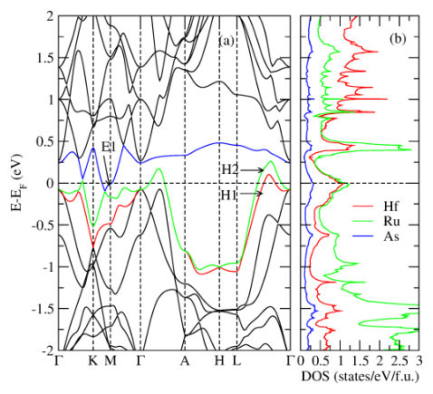
Summary. This paper provides a first-principles theoretical investigation of the superconducting properties of hexagonal HfRuAs. It reveals that the material is a strong-coupling, anisotropic s-wave superconductor driven by low-frequency phonon modes. The study highlights significant momentum-dependent anisotropy in the superconducting gap across different Fermi surface sheets.
Why it may be interesting. not directly relevant
Main problem. The study aims to resolve the lack of theoretical understanding regarding the superconducting pairing mechanism, momentum-dependent electron-phonon coupling, and the anisotropic gap structure in hexagonal HfRuAs.
Main result. The authors identify h-HfRuAs as a strong-coupling, phonon-mediated, anisotropic s-wave superconductor where low-frequency Hf and Ru vibrations drive the pairing.
Method. First-principles calculations using Density Functional Theory (DFT) and Density Functional Perturbation Theory (DFPT) combined with the anisotropic Migdal-Eliashberg equations solved via the EPW code and Wannier interpolation.
Model / system. The physical system is hexagonal HfRuAs (h-HfRuAs), a ternary intermetallic compound with a $Fe_2P$-type structure. The model uses anisotropic Migdal-Eliashberg theory to describe a multiband, phonon-mediated superconducting state.
Key observables. Electron-phonon coupling constant (lambda), superconducting transition temperature (Tc), superconducting gap (Delta), Eliashberg spectral function, and quasiparticle density of states.
Important parameters / regimes. EPC constant lambda approx 1.56, gap ratio 2Delta(0)/kBTc approx 4.2, Coulomb pseudopotential mu*c = 0.15, and logarithmic phonon frequency hbaromega_log approx 10.4 meV.
Assumptions / limitations. The Coulomb interaction is modeled using the empirical Morel-Anderson pseudopotential; the superconducting gap symmetry is assumed to be s-wave.
Figures summary. Fig 1: Crystal structure and Brillouin Zone; Fig 2: Phonon dispersion and Eliashberg spectral function; Fig 3: Atomic displacement patterns; Fig 4: Electronic band structure and DOS; Fig 5: Momentum-dependent Fermi velocity; Fig 6: Momentum-resolved EPC and SC gap distributions.
Paper structure. The paper introduces the problem of superconductivity in h-HfRuAs, details the DFT/DFPT and Migdal-Eliashberg computational framework, presents results on phonon-driven coupling and gap anisotropy, and concludes with a discussion on the implications for the TT'X family of compounds.
We present a comprehensive theoretical investigation of the superconducting (SC) properties of hexagonal HfRuAs ($h$-HfRuAs) by solving anisotropic Migdal--Eliashberg (ME) equations with the inputs from \textit{ab initio} calculations of electronic structure, phonon dispersion and electron phonon coupling matrix elements. The calculated Eliashberg spectral function reveals strong electron--phonon coupling (EPC) with a constant $λ\approx 1.56$, dominated by low-frequency phonon modes associated primarily with Hf and Ru vibrations. The SC state is characterized by a single anisotropic gap with overall $s$-wave symmetry, as evidenced by the fully gapped quasiparticle density of states. The momentum-resolved EPC and SC gap exhibit pronounced anisotropy across different Fermi surface sheets, with the largest variations occurring on the hole-like bands. The SC gap is centered around $Δ\approx 2.9$ meV with a spread of $\sim 0.8$ meV, indicating significant multiband anisotropy. The resulting gap ratio $2Δ(0)/k_B T_c \approx 4.2$ exceeds the BCS weak-coupling limit, establishing $h$-HfRuAs as a strong-coupling superconductor. The calculated transition temperature, $T_c$, agrees in the order of magnitude with experiments. Overall, our results identify $h$-HfRuAs as a phonon-mediated, strongly coupled anisotropic superconductor and provide detailed insights into the role of momentum-dependent electron--phonon interactions in determining its SC properties.
Authors: Debashree Nayak, Dimple Rani, Prasanjit Samal, Kartik Senapati
Type: both · Category: other · PDF: https://arxiv.org/pdf/2605.17066v1
Analysis basis: full PDF text, analyzed in chunks
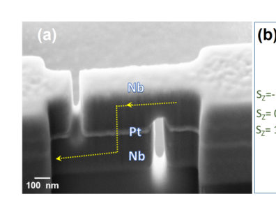
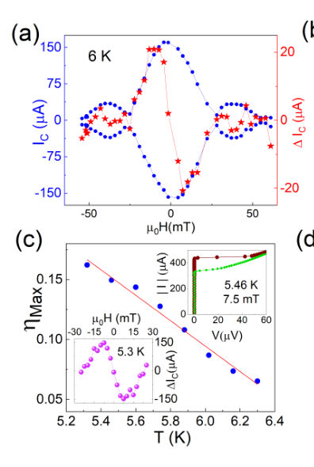
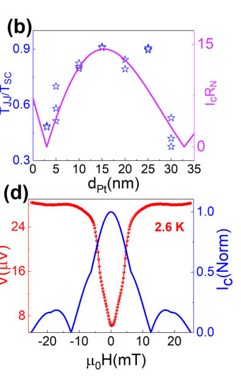
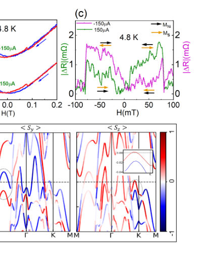
Summary. The researchers developed a new type of Josephson diode using a heavy metal Pt barrier that utilizes the supercurrent spin-Hall effect to induce non-reciprocity. This approach achieves significantly higher diode efficiency (17%) and operates at much higher temperatures (above 4 K) than previous Rashba-based methods. This provides a scalable, metallic architecture for future superconducting electronics.
Why it may be interesting. not directly relevant
Main problem. Achieving high-efficiency, tunable Josephson diodes (JDs) that operate at higher temperatures than existing Rashba-based devices, which typically suffer from low efficiency (<10%) and require millikelvin temperatures.
Main result. Demonstrated Nb-Pt-Nb nanopillar Josephson junctions with diode efficiencies as high as 17% at temperatures above liquid Helium (up to 6 K), driven by the supercurrent spin-Hall effect.
Method. Experimental transport measurements (I-V, Fraunhofer patterns, V(H) curves) on FIB-milled nanopillars combined with first-principles DFT calculations of the Nb/Pt interface.
Model / system. Vertical Nb-Pt-Nb nanopillar Josephson junctions featuring a heavy metal Pt barrier with strong intrinsic spin-orbit coupling, where a supercurrent-induced spin moment is generated.
Key observables. Josephson diode efficiency (asymmetry in critical current), critical current Fraunhofer patterns, voltage-vs-magnetic field curves, and 0-pi transition signatures.
Important parameters / regimes. Pt barrier thickness (3-30 nm), operating temperature (up to 6 K), and external in-plane magnetic field (up to ~7.5 mT).
Assumptions / limitations. Calculations assumed epitaxial growth conditions for structural relaxation; the system is treated in the diffusive regime.
Figures summary. Fig 1: SEM micrograph and schematic of spin accumulation and phase difference. Fig 2: Fraunhofer patterns and asymmetry in critical current. Fig 3: Temperature dependence and 0-pi transition signatures. Fig 4: Electronic structure and spin-splitting calculations.
Paper structure. Introduction to JDE limitations, experimental fabrication of nanopillars, demonstration of high-efficiency diode effect, investigation of the physical origin via spin-valve and 0-pi transition analysis, and DFT-based electronic structure validation.
In the recent years it has been possible to achieve diode-like, non-reciprocal current-voltage response in Josephson junctions, despite the intrinsic symmetry of the Josephson effect itself. This is typically achieved by incorporating Rashba spin-orbit coupling into the Josephson junction as a strong inversion symmetry breaking component, and external magnetic field as a tuneable time-reversal symmetry breaking component. However, the efficiencies of the external field tuneable Josephson-diodes have remained limited to less than 10 \%, often measured below 100 mK temperature. In this work we take a new approach where non-reciprocity is induced by intrinsic SOC in a heavy metal Josephson barrier via the predicted supercurrent spin-Hall effect. By measuring a series of Nb-Pt-Nb nanopillar junctions we demonstrated field tuneable Josephson diode efficiencies as high as 17\%, measured above liquid Helium temperature. This was possible by the realization of a net non-equilibrium spin segregation in the Pt barrier, due to the supercurrent spin-Hall effect in the Pt barrier, analogous to the normal spin-Hall effect. As the direction of the induced spin moment is determined by the bias current, an external magnetic field causes the associated phases to add with opposite signs for opposite current directions, resulting in a nonreciprocal supercurrent across the junction.